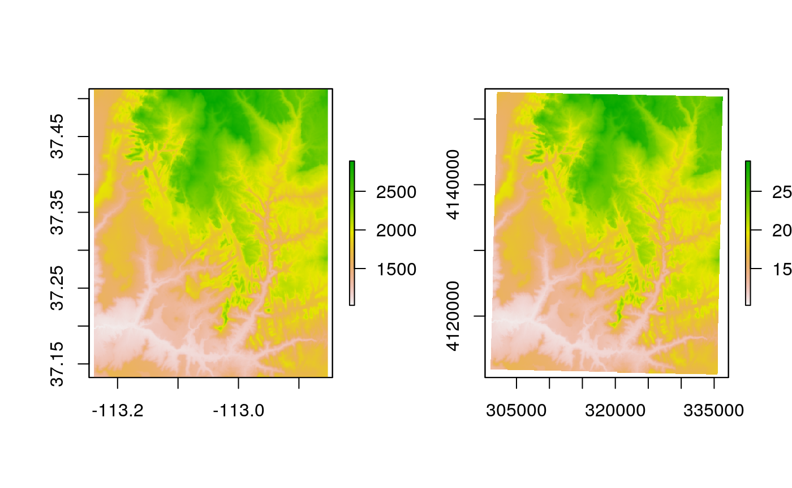
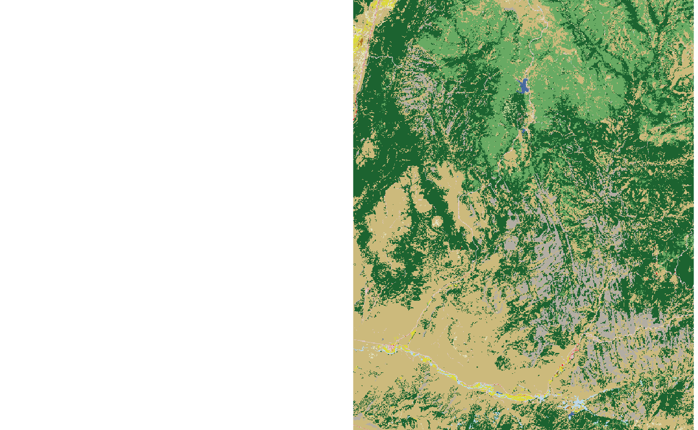
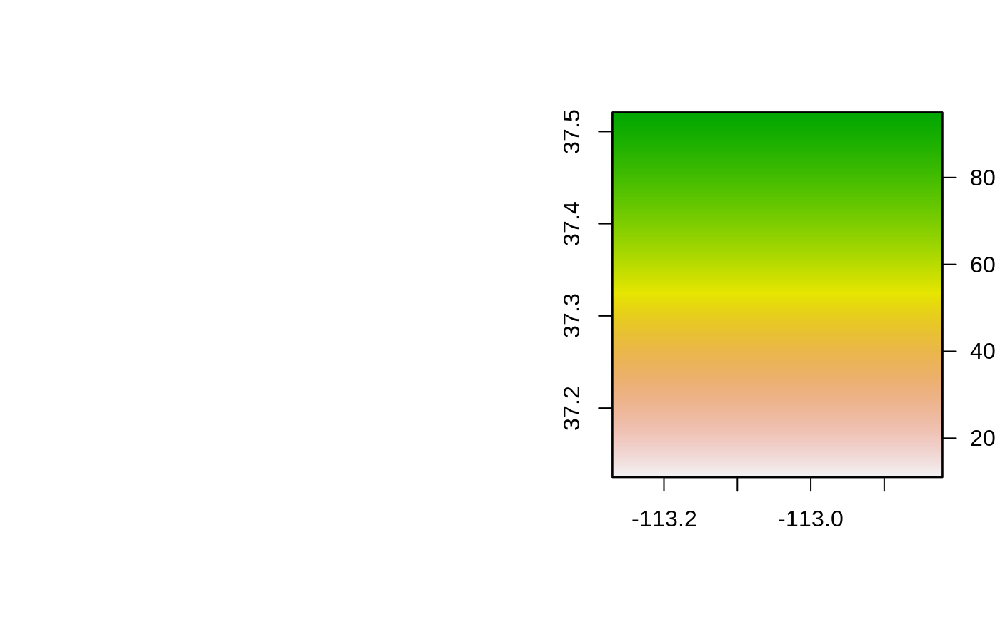
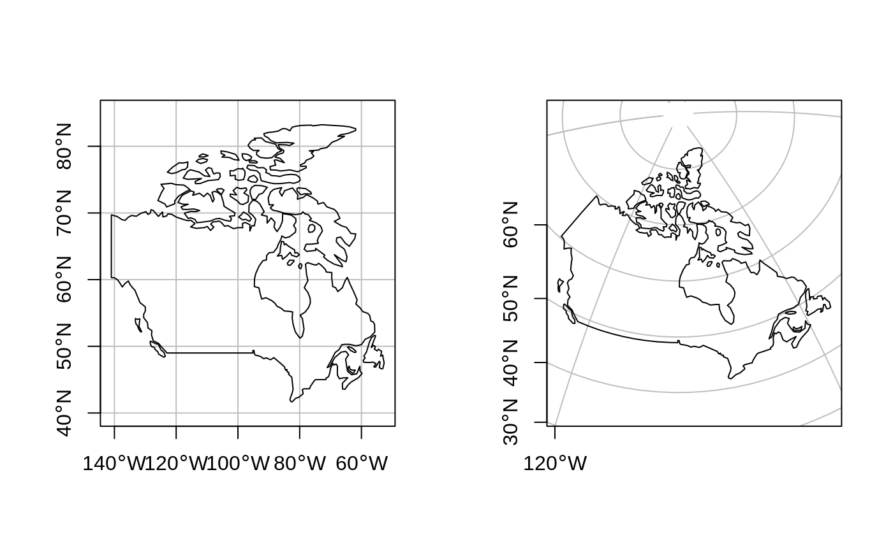

vignettes/solutions06.Rmd
solutions06.RmdThe solutions assume the following packages are attached (other packages will be attached when needed):
nz_wgs by transforming nz object into the WGS84 CRS.
crs for both and use this to query their CRSs.nz_wgs and plot the result: what is wrong with this map of New Zealand and why?
st_crs(nz)
#> Coordinate Reference System:
#> User input: EPSG:2193
#> wkt:
#> PROJCS["NZGD2000 / New Zealand Transverse Mercator 2000",
#> GEOGCS["NZGD2000",
#> DATUM["New_Zealand_Geodetic_Datum_2000",
#> SPHEROID["GRS 1980",6378137,298.257222101,
#> AUTHORITY["EPSG","7019"]],
#> TOWGS84[0,0,0,0,0,0,0],
#> AUTHORITY["EPSG","6167"]],
#> PRIMEM["Greenwich",0,
#> AUTHORITY["EPSG","8901"]],
#> UNIT["degree",0.0174532925199433,
#> AUTHORITY["EPSG","9122"]],
#> AUTHORITY["EPSG","4167"]],
#> PROJECTION["Transverse_Mercator"],
#> PARAMETER["latitude_of_origin",0],
#> PARAMETER["central_meridian",173],
#> PARAMETER["scale_factor",0.9996],
#> PARAMETER["false_easting",1600000],
#> PARAMETER["false_northing",10000000],
#> UNIT["metre",1,
#> AUTHORITY["EPSG","9001"]],
#> AUTHORITY["EPSG","2193"]]
nz_wgs = st_transform(nz, 4326)
nz_crs = st_crs(nz)
nz_wgs_crs = st_crs(nz_wgs)
nz_crs$epsg
#> [1] 2193
nz_wgs_crs$epsg
#> [1] 4326
st_bbox(nz)
#> xmin ymin xmax ymax
#> 1090144 4748537 2089533 6191874
st_bbox(nz_wgs)
#> xmin ymin xmax ymax
#> 166.42630 -47.28285 178.55037 -34.41452
nz_wgs_NULL_crs = st_set_crs(nz_wgs, NA)
par(mfrow = c(1, 3))
plot(st_geometry(nz))
plot(st_geometry(nz_wgs))
plot(st_geometry(nz_wgs_NULL_crs))
# answer: it is fatter in the East-West direction
# because New Zealand is close to the South Pole and meridians converge thereworld dataset to the transverse Mercator projection ("+proj=tmerc") and plot the result. What has changed and why? Try to transform it back into WGS 84 and plot the new object. Why does the new object differ from the original one?
# see https://github.com/r-spatial/sf/issues/509
library(sf)
library(spData)
world_tmerc = st_transform(world, "+proj=tmerc")
# plot(st_geometry(world_tmerc)) # fails on old versions of geos
world_4326 = st_transform(world_tmerc, 4326)
# plot(st_geometry(world_4326))cat_raster) into NAD83 / UTM zone 12N using the nearest neighbor interpolation method. What has changed? How does it influence the results?
utm12n = "+proj=utm +zone=12 +ellps=GRS80 +datum=NAD83 +units=m +no_defs"
con_raster = raster(system.file("raster/srtm.tif", package = "spDataLarge"))
con_raster_utm12n = projectRaster(con_raster, crs = utm12n, method = "ngb")
con_raster_utm12n
#> class : RasterLayer
#> dimensions : 475, 490, 232750 (nrow, ncol, ncell)
#> resolution : 73.8, 92.5 (x, y)
#> extent : 300619.2, 336781.2, 4110656, 4154593 (xmin, xmax, ymin, ymax)
#> crs : +proj=utm +zone=12 +datum=NAD83 +units=m +no_defs
#> source : memory
#> names : srtm
#> values : 1024, 2892 (min, max)
par(mfrow = c(1, 2))
plot(con_raster)
plot(con_raster_utm12n)
There are several differences between the original and the transformed raster, including a different number of rows and columns (and subsequently cells), projection units, and slightly different distribution of values.
cat_raster) into WGS 84 using the bilinear interpolation method. What has changed? How does it influence the results?
wgs84 = "+proj=longlat +ellps=WGS84 +datum=WGS84 +no_defs"
cat_raster = raster(system.file("raster/nlcd2011.tif", package = "spDataLarge"))
#> Warning in showSRID(SRS_string, format = "PROJ", multiline = "NO", prefer_proj =
#> prefer_proj): Discarded datum unknown in Proj4 definition
cat_raster_wgs84 = projectRaster(cat_raster, crs = wgs84, method = "bilinear")
cat_raster_wgs84
#> class : RasterLayer
#> dimensions : 1394, 1111, 1548734 (nrow, ncol, ncell)
#> resolution : 0.000356, 0.000284 (x, y)
#> extent : -113.2432, -112.8477, 37.12494, 37.52083 (xmin, xmax, ymin, ymax)
#> crs : +proj=longlat +datum=WGS84 +no_defs
#> source : memory
#> names : nlcd2011
#> values : 5.751417, 95 (min, max)
par(mfrow = c(1, 2))
plot(cat_raster)
plot(cat_raster_wgs84)
There are several differences between the original and the transformed raster, including a different number of rows and columns (and subsequently cells), and projection units. The most important difference of the bilinear interpolation is a conversion of integer values in the original raster to float values in the output raster. This operation should be avoided because float values are not suitable to represent categorical values.
proj4string. It should have the Lambert Azimuthal Equal Area (laea) projection, the WGS84 ellipsoid, the longitude of projection center of 95 degrees west, the latitude of projection center of 60 degrees north, and its units should be in meters. Next, subset Canada from the world object and transform it into the new projection. Plot and compare a map before and after the transformation.
new_p4s = "+proj=laea +ellps=WGS84 +lon_0=-95 +lat_0=60 +units=m"
canada = dplyr::filter(world, name_long == "Canada")
new_canada = st_transform(canada, new_p4s)
par(mfrow = c(1, 2))
plot(st_geometry(canada), graticule = TRUE, axes = TRUE)
plot(st_geometry(new_canada), graticule = TRUE, axes = TRUE)